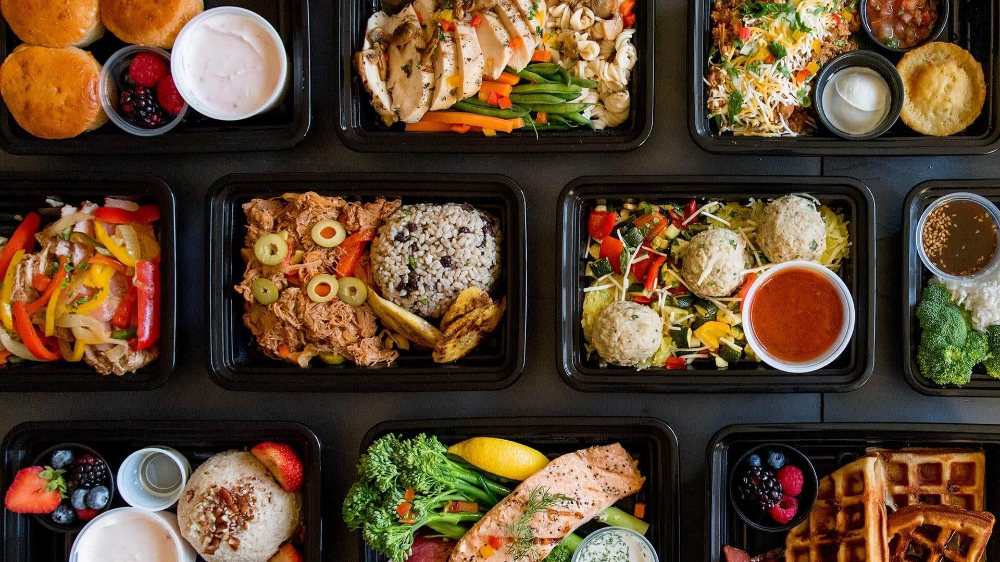

Music Recommendation System
Building a recommendation system in Python for a music streaming service. Packages used: Pandas, Numpy, Matplotlib, Seaborn, Sklearn.
Summary of the Music Recommendation System Project: We aim to build a music recommendation system that provides personalized song suggestions based on user listening history and preferences.
Context:
The system is designed to enhance user experience by offering relevant song recommendations. Various models were explored, including rank-based, collaborative filtering, model-based, cluster-based, and content-based approaches.
Value:
A robust recommendation system improves user engagement and satisfaction, leading to higher user retention and increased revenue.
Findings:
Rank-Based Recommendation: Recommends popular songs but lacks personalization.
User-User Collaborative Filtering: Personalized recommendations based on similar users.
Precision: 41.4%, Recall: 61.1%, F1 Score: 49.4%.
Item-Item Collaborative Filtering: Recommends songs based on item similarities.
Precision: 31.1%, Recall: 56.9%, F1 Score: 40.2%.
Model-Based Collaborative Filtering (Matrix Factorization): Captures latent features for accurate recommendations.
Precision: 41.5%, Recall: 63.5%, F1 Score: 50.2%.
Best overall performance.
Cluster-Based Recommendation System: Groups similar users and items into clusters.
Precision: 39.7%, Recall: 58.2%, F1 Score: 47.2%.
Content-Based Recommendation System (TF-IDF): Recommends songs based on content features. Effective for similar artists and genres but limited in diversity.
Recommendations:
Adopt Model-Based Collaborative Filtering: Best performance with high precision, recall, and F1 score. Ensures accurate and relevant recommendations.
Develop Hybrid Models:
Combine content-based and collaborative filtering for personalized and diverse recommendations.
Feature Enrichment: Include additional features like album, release year, and mood.
Regular Updates and Tuning: Continuously collect data and tune the model to adapt to user preferences.
Real-Time Feedback: Utilize user feedback to dynamically refine recommendations. By adopting the model-based collaborative filtering approach and working towards a hybrid model, we can provide a high-quality recommendation system that enhances user experience and drives growth.

Data Analysis
Using Exploratory Data Analysis in Python to find and develop strategies to help a Foodhub service. Packages used: Numpy, Pandas, Matplotlib, Seaborn.
Content Summary Context: In New York, the number of restaurants is rapidly increasing. Busy students and professionals frequently rely on these restaurants due to their hectic schedules. Online food delivery services are particularly beneficial for them, providing meals from their favorite eateries. FoodHub is an online food aggregator that connects multiple restaurants to customers through a single smartphone app.
Objective: FoodHub wants to analyze the data collected from their orders to understand the demand for different restaurants. This analysis aims to enhance customer experience by gaining insights into order patterns and preferences.
Summary
What is FoodHub? FoodHub is an app that allows customers to order food from various restaurants. Once an order is placed, the app assigns a delivery person to pick up and deliver the food to the customer's location. Customers can rate their orders, and FoodHub earns money by taking a small fee from each delivery order.
Why Analyze the Data? FoodHub collects data on each order to understand customer preferences and restaurant demands. By analyzing this data, FoodHub aims to improve customer satisfaction and streamline their services.
Key Findings and Insights:
Customer Preferences: By looking at the types of cuisines ordered and the ratings given, FoodHub can determine which restaurants and dishes are most popular.
Order Patterns: Analyzing the times and days when orders are placed can help identify peak times and manage resources more efficiently.
Delivery Efficiency: Evaluating the time taken for food preparation and delivery can help identify areas for improvement in the delivery process.
Benefits for Stakeholders:
Improved Customer Experience: Understanding what customers like helps FoodHub offer better recommendations and services.
Optimized Operations: Identifying busy times and improving delivery efficiency can lead to faster service and happier customers.
Increased Revenue: Satisfied customers are likely to order more frequently, boosting FoodHub's earnings.
The company charges different commission rates based on the order cost: 25% on orders costing more than $20
Observations: The company earns significant revenue by applying commission rates to orders based on their cost. Orders costing more than $20 contribute a higher percentage of revenue due to the higher commission rate. Around 11% of orders have a total delivery time exceeding 60 minutes, which includes both preparation and delivery time.
This insight can help the company identify potential areas for improving delivery efficiency and customer satisfaction.
Delivery times are generally faster on weekends compared to weekdays, which might be due to factors such as lower traffic or fewer orders during off-peak times.
Conclusions:
Restaurant Popularity: Shake Shack is the most frequently visited restaurant, indicating strong customer preference.
Customer Ratings: Many customers do not rate their orders, but those who do generally give high ratings (4 and 5 stars).
Order Patterns: Weekends experience higher order volumes compared to weekdays.
Delivery Efficiency: Mean delivery times are faster on weekends (22 minutes) than on weekdays (28 minutes).
Revenue Generation: The company earns significant revenue from commission rates, with higher-cost orders contributing more.
Delivery Time: Around 11% of orders take more than 60 minutes to be delivered, including both preparation and delivery time.
Recommendations:
Encourage Customer Feedback: Implement incentives for customers to rate their orders, such as discounts or loyalty points. This will provide more comprehensive feedback and help improve service quality.
Optimize Delivery Operations: Analyze peak order times and ensure sufficient delivery staff during busy hours to maintain fast delivery times, especially on weekdays.
Explore partnerships with delivery service providers to enhance efficiency.
Enhance Customer Experience: Focus on improving the experience for the most frequently visited restaurants, as these drive a significant portion of orders.
Offer personalized recommendations based on customer preferences and past orders to increase customer satisfaction.
Promotional Offers: Highlight the top-rated restaurants in promotional materials to attract more customers. For example, Shake Shack and The Meatball Shop could be featured prominently.
Consider introducing special offers or meal deals during weekends to capitalize on higher order volumes.
Menu Optimization: Analyze the types of cuisines that are most popular and work with restaurants to optimize their menus, ensuring they offer dishes that meet customer preferences.
Use feedback ratings to identify and address any issues with specific menu items or restaurants.
Reduce Long Delivery Times: Identify factors contributing to longer delivery times and implement measures to address them, such as optimizing delivery routes or improving order preparation processes.
By implementing these recommendations, FoodHub can enhance its overall business performance, improve customer satisfaction, and drive growth.
Data Visualization
A dynamic and interactive dashboard to track via NOAA, the number of lightening strikes in the US. Tools used: Tableau
Interactive Dashboard of Lightning Strikes Across the US (2009-2018)
Overview: The interactive dashboard visualizes lightning strike data across the United States from 2009 to 2018, showcasing trends and patterns over these years.
The goal is to provide insights into the frequency and distribution of lightning strikes and how they have been increasing.
Components:
Map Visualization:
What It Shows: The map highlights the locations of lightning strikes across the US. Different colors represent the frequency of strikes in each region.
Purpose: It allows users to see which areas are most prone to lightning strikes. By visualizing the geographic distribution, users can identify regions with higher lightning activity.
Trend Line Chart:
What It Shows: This chart displays the number of lightning strikes each year from 2009 to 2018, revealing the trend of lightning activity.
Purpose: It helps users understand how lightning strikes have increased over time. The trend line makes it easy to see any upward or downward trends in the data.
Interactive Filters:
What They Do: These filters allow users to customize the view by selecting specific years, regions, or intensities of strikes.
Purpose: By using these filters, users can explore the data in more detail and focus on specific aspects that interest them. It enhances the interactivity and usability of the dashboard.
Tooltips and Annotations:
What They Show: When users hover over data points on the map or chart, additional information is displayed, such as the exact number of strikes and any notable events.
Purpose: Tooltips provide context and detailed information without cluttering the visualization. Annotations highlight significant trends or anomalies, making the data
more informative and engaging.
Implications of the Trends Observed:
Public Safety: The increase in lightning strikes indicates a higher risk of injuries and fatalities. Awareness and preparedness can help mitigate these risks.
Infrastructure Impact: More frequent lightning activity can lead to increased damage to buildings, power lines, and other infrastructure. Enhancing lightning protection systems
can reduce these impacts.
Environmental Effects: Lightning strikes can cause wildfires, affecting ecosystems and air quality. Understanding these patterns can inform conservation efforts and climate change studies.
Economic Costs: Repair and maintenance costs due to lightning damage can be substantial. Preventive measures can lower long-term expenses.
Agriculture and Wildlife: Lightning can damage crops and harm wildlife. Protective measures can safeguard agricultural productivity and wildlife habitats.
By visualizing and analyzing the data on lightning strikes from 2009 to 2018, the dashboard provides valuable insights that can inform public safety measures, infrastructure planning,
environmental conservation, and more. It is a powerful tool for researchers, policymakers, and the general public to understand and respond to the increasing trend of lightning strikes
across the US.
Data Analysis
Delving deep into a shopping-trend dataset in R, to find business problems, and to offer insights.
Key Insights
Shopping Frequency and Patterns: Customers in their mid-30s and late 50s shop the most.
Sales peak around March, May, August, and November, while sales are lowest in June and end of July.
Popular Categories and Items: Most popular items in the store are clothing items. Jeans are the least popular.
Categories like "Summer" and "Winter" show the highest sales.
Customer Demographics: Men shop more frequently than women at this store.
Men around age 25 and 33 are the most frequent shoppers.
Women shop here half as much as men do.
Spending Behavior:
Non-subscribers spend slightly more on average than subscribers.
Majority of sales are from small purchases rather than large ones.
Payment Methods:
Credit card is the most popular form of payment, followed by Venmo.
Subscription Impact:
Non-subscribers might be making bigger purchases or impulse buying.
Subscribers might be making purchases over time to take advantage of benefits.
Discount and Promo Code Usage:
Customers are not taking advantage of discounts or promo codes.
Business Issues Identified
Marketing to Women:
Women shop half as much as men. There is potential to increase sales by targeting marketing efforts towards women.
Seasonal Sales Dip:
Sales are lowest in June and end of July. Strategies are needed to boost sales during this period.
Subscription Program:
The subscription program is not being fully utilized. Better promotions are needed to drive subscriptions.
Promotions and Discounts:
Customers are not utilizing promo codes and discounts. Need to find ways to encourage their use.
Recommendations
Targeted Marketing to Women:
Develop marketing campaigns specifically aimed at attracting more female customers. Highlight products that appeal to women and offer incentives like exclusive discounts
or events.
Seasonal Promotions:
Introduce special sales or promotional events in June and July to boost sales during these low periods. This could include end-of-season sales or exclusive summer deals.
Enhance Subscription Program:
Optimize the subscription program by offering additional benefits, such as early access to sales, exclusive discounts, and loyalty rewards. Promote these benefits through
targeted marketing campaigns. Make sure customers are aware that there is a subscription available.
Encourage Discount and Promo Code Use:
Create awareness about existing discounts and promo codes through email campaigns, social media, and in-store signage. Consider offering additional discounts or rewards for
using promo codes to incentivize customers.
Optimize Store Operations During Peak Times:
Increase staffing levels during peak times to improve customer service and reduce wait times.
Expand self-checkout options to ease congestion and provide a quicker checkout process.
Improve Inventory Management:
Use predictive analytics to forecast demand for popular categories and ensure adequate stock levels.
Implement automated replenishment systems to maintain optimal inventory levels and reduce stockouts.
Customer Feedback and Experience:
Collect and analyze customer feedback to identify areas for improvement and implement changes accordingly.
Improve the in-store experience by optimizing store layout, offering personalized assistance, and ensuring cleanliness and organization.
By implementing these recommendations, businesses can address the identified issues, optimize operations, and enhance overall customer satisfaction. This will lead to
increased loyalty, higher sales, and a stronger competitive position in the market.
Work in Progress
Something Cool

Work in Progress
Something Grand